CONTENT OUTLINE C++ 案例
一、案例：演讲比赛流程管理 1、 演讲比赛程序需求 1.1 比赛规则 学校举行一场演讲比赛，共有12个人 参加。比赛共两轮 ，第一轮为淘汰赛，第二轮为决赛。 比赛方式：分组比赛，每组6个人 ；选手每次要随机分组，进行比赛 每名选手都有对应的编号 ，如 10001 ~ 10012 第一轮分为两个小组，每组6个人。 整体按照选手编号进行抽签 后顺序演讲。 当小组演讲完后，淘汰组内排名最后的三个选手，前三名晋级 ，进入下一轮的比赛。 第二轮为决赛，前三名胜出 每轮比赛过后需要显示晋级选手的信息 1.2 程序功能 开始演讲比赛：完成整届比赛的流程，每个比赛阶段需要给用户一个提示，用户按任意键后继续下一个阶段 查看往届记录：查看之前比赛前三名结果，每次比赛都会记录到文件中，文件用.csv后缀名保存 清空比赛记录：将文件中数据清空 退出比赛程序：可以退出当前程序 1.3 程序效果图
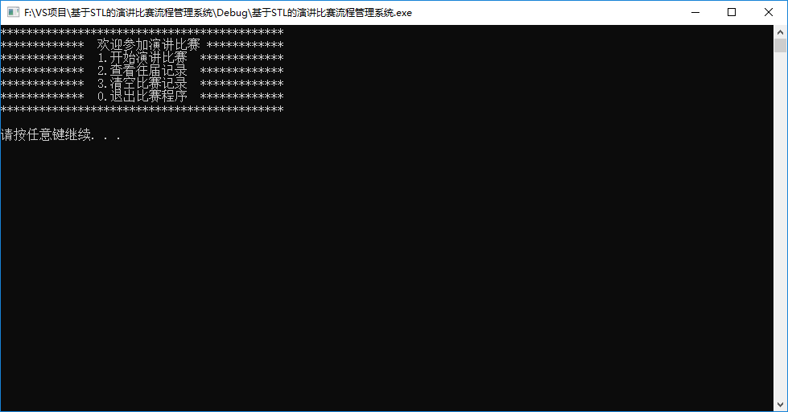
2、项目创建 创建项目步骤如下：
2.1 创建项目 2.2 添加文件 3、创建管理类 功能描述：
提供菜单界面与用户交互 对演讲比赛流程进行控制 与文件的读写交互 3.1 创建文件 在头文件和源文件的文件夹下分别创建speechManager.h 和 speechManager.cpp文件 3.2 头文件实现 在speechManager.h中设计管理类
代码如下：
1 2 3 4 5 6 7 8 9 10 11 12 13 14 15 16 #pragma once #include <iostream> using namespace std ;class SpeechManager { public : SpeechManager(); ~SpeechManager(); };
3.3 源文件实现 在speechManager.cpp中将构造和析构函数空实现补全
1 2 3 4 5 6 7 8 9 #include "speechManager.h" SpeechManager::SpeechManager() { } SpeechManager::~SpeechManager() { }
4、菜单功能 功能描述：与用户的沟通界面
4.1 添加成员函数 在管理类speechManager.h中添加成员函数 void show_Menu();
4.2 菜单功能实现 在管理类speechManager.cpp中实现 show_Menu()函数 1 2 3 4 5 6 7 8 9 10 11 void SpeechManager::show_Menu () cout << "********************************************" << endl ; cout << "************* 欢迎参加演讲比赛 ************" << endl ; cout << "************* 1.开始演讲比赛 *************" << endl ; cout << "************* 2.查看往届记录 *************" << endl ; cout << "************* 3.清空比赛记录 *************" << endl ; cout << "************* 0.退出比赛程序 *************" << endl ; cout << "********************************************" << endl ; cout << endl ; }
4.3 测试菜单功能 代码：
1 2 3 4 5 6 7 8 9 10 11 12 13 14 #include <iostream> using namespace std ;#include "speechManager.h" int main () SpeechManager sm; sm.show_Menu(); system("pause" ); return 0 ; }
5、退出功能 5.1 提供功能接口 代码：
1 2 3 4 5 6 7 8 9 10 11 12 13 14 15 16 17 18 19 20 21 22 23 24 25 26 27 28 29 30 31 32 33 int main () SpeechManager sm; int choice = 0 ; while (true ) { sm.show_Menu(); cout << "请输入您的选择： " << endl ; cin >> choice; switch (choice) { case 1 : break ; case 2 : break ; case 3 : break ; case 0 : break ; default : system("cls" ); break ; } } system("pause" ); return 0 ; }
5.2 实现退出功能 在speechManager.h中提供退出系统的成员函数 void exitSystem();
在speechManager.cpp中提供具体的功能实现
1 2 3 4 5 6 void SpeechManager::exitSystem () cout << "欢迎下次使用" << endl ; system("pause" ); exit (0 ); }
5.3 测试功能 在main函数分支 0 选项中，调用退出程序的接口
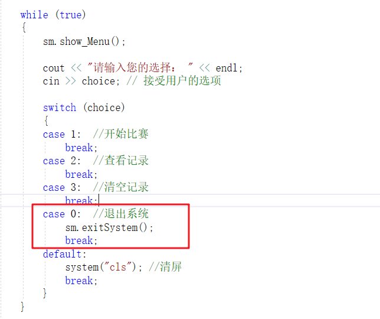
6、演讲比赛功能 6.1 功能分析 比赛流程分析：
抽签 → 开始演讲比赛 → 显示第一轮比赛结果 →
抽签 → 开始演讲比赛 → 显示前三名结果 → 保存分数
6.2 创建选手类 选手类中的属性包含：选手姓名、分数 头文件中创建 speaker.h文件，并添加代码： 1 2 3 4 5 6 7 8 9 10 #pragma once #include <iostream> using namespace std ;class Speaker { public : string m_Name; double m_Score[2 ]; };
6.3 比赛 6.3.1 成员属性添加 1 2 3 4 5 6 7 8 9 10 11 vector <int >v1;vector <int >v2;vector <int >vVictory;map <int , Speaker> m_Speaker;
6.3.2 初始化属性 在speechManager.h中提供开始比赛的的成员函数 void initSpeech(); 在speechManager.cpp中实现void initSpeech(); 1 2 3 4 5 6 7 8 9 10 void SpeechManager::initSpeech () this ->v1.clear (); this ->v2.clear (); this ->vVictory.clear (); this ->m_Speaker.clear (); this ->m_Index = 1 ; }
SpeechManager构造函数中调用void initSpeech(); 1 2 3 4 5 SpeechManager::SpeechManager() { this ->initSpeech(); }
6.3.3 创建选手 在speechManager.h中提供开始比赛的的成员函数 void createSpeaker(); 在speechManager.cpp中实现void createSpeaker(); 1 2 3 4 5 6 7 8 9 10 11 12 13 14 15 16 17 18 19 20 21 22 void SpeechManager::createSpeaker () string nameSeed = "ABCDEFGHIJKL" ; for (int i = 0 ; i < nameSeed.size (); i++) { string name = "选手" ; name += nameSeed[i]; Speaker sp; sp.m_Name = name; for (int i = 0 ; i < 2 ; i++) { sp.m_Score[i] = 0 ; } this ->v1.push_back(i + 10001 ); this ->m_Speaker.insert(make_pair (i + 10001 , sp)); } }
SpeechManager类的 构造函数中调用void createSpeaker(); 1 2 3 4 5 6 7 8 SpeechManager::SpeechManager() { this ->initSpeech(); this ->createSpeaker(); }
测试 在main函数中，可以在创建完管理对象后，使用下列代码测试12名选手初始状态 1 2 3 4 5 6 for (map <int , Speaker>::iterator it = sm.m_Speaker.begin (); it != sm.m_Speaker.end (); it++){ cout << "选手编号：" << it->first << " 姓名： " << it->second.m_Name << " 成绩： " << it->second.m_Score[0 ] << endl ; }
6.3.4 开始比赛成员函数添加 在speechManager.h中提供开始比赛的的成员函数 void startSpeech(); 该函数功能是主要控制比赛的流程 在speechManager.cpp中将startSpeech的空实现先写入 我们可以先将整个比赛的流程 写到函数中 1 2 3 4 5 6 7 8 9 10 11 12 13 14 15 16 17 18 19 20 21 void SpeechManager::startSpeech () }
6.3.5 抽签 功能描述：
正式比赛前，所有选手的比赛顺序需要打乱，我们只需要将存放选手编号的容器 打乱次序即可 在speechManager.h中提供抽签的的成员函数 void speechDraw(); 在speechManager.cpp中实现成员函数 void speechDraw(); 1 2 3 4 5 6 7 8 9 10 11 12 13 14 15 16 17 18 19 20 21 22 23 24 25 26 27 void SpeechManager::speechDraw () cout << "第 << " << this ->m_Index << " >> 轮比赛选手正在抽签" <<endl ; cout << "---------------------" << endl ; cout << "抽签后演讲顺序如下：" << endl ; if (this ->m_Index == 1 ) { random_shuffle(v1.begin (), v1.end ()); for (vector <int >::iterator it = v1.begin (); it != v1.end (); it++) { cout << *it << " " ; } cout << endl ; } else { random_shuffle(v2.begin (), v2.end ()); for (vector <int >::iterator it = v2.begin (); it != v2.end (); it++) { cout << *it << " " ; } cout << endl ; } cout << "---------------------" << endl ; system("pause" ); cout << endl ; }
6.3.6 开始比赛 在speechManager.h中提供比赛的的成员函数 void speechContest(); 在speechManager.cpp中实现成员函数 void speechContest(); 1 2 3 4 5 6 7 8 9 10 11 12 13 14 15 16 17 18 19 20 21 22 23 24 25 26 27 28 29 30 31 32 33 34 35 36 37 38 39 40 41 42 43 44 45 46 47 48 49 50 51 52 53 54 55 56 57 58 59 60 61 62 63 64 65 66 67 68 69 70 71 72 73 74 75 76 77 void SpeechManager::speechContest () cout << "------------- 第" << this ->m_Index << "轮正式比赛开始：------------- " << endl ; multimap <double , int , greater<int >> groupScore; int num = 0 ; vector <int >v_Src; if (this ->m_Index == 1 ) { v_Src = v1; } else { v_Src = v2; } for (vector <int >::iterator it = v_Src.begin (); it != v_Src.end (); it++) { num++; deque <double >d; for (int i = 0 ; i < 10 ; i++) { double score = (rand() % 401 + 600 ) / 10.f ; d.push_back(score); } sort(d.begin (), d.end (), greater<double >()); d.pop_front(); d.pop_back(); double sum = accumulate(d.begin (), d.end (), 0.0f ); double avg = sum / (double )d.size (); this ->m_Speaker[*it].m_Score[this ->m_Index - 1 ] = avg; groupScore.insert(make_pair (avg, *it)); if (num % 6 == 0 ) { cout << "第" << num / 6 << "小组比赛名次：" << endl ; for (multimap <double , int , greater<int >>::iterator it = groupScore.begin (); it != groupScore.end (); it++) { cout << "编号: " << it->second << " 姓名： " << this ->m_Speaker[it->second].m_Name << " 成绩： " << this ->m_Speaker[it->second].m_Score[this ->m_Index - 1 ] << endl ; } int count = 0 ; for (multimap <double , int , greater<int >>::iterator it = groupScore.begin (); it != groupScore.end () && count < 3 ; it++, count++) { if (this ->m_Index == 1 ) { v2.push_back((*it).second); } else { vVictory.push_back((*it).second); } } groupScore.clear (); cout << endl ; } } cout << "------------- 第" << this ->m_Index << "轮比赛完毕 ------------- " << endl ; system("pause" ); }
在startSpeech比赛流程控制的函数中，调用比赛函数
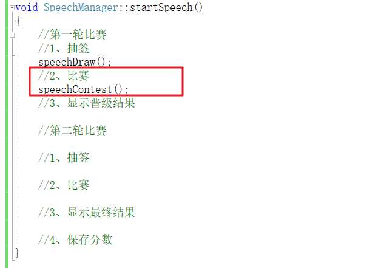
6.3.7 显示比赛分数 在speechManager.h中提供比赛的的成员函数 void showScore(); 在speechManager.cpp中实现成员函数 void showScore(); 1 2 3 4 5 6 7 8 9 10 11 12 13 14 15 16 17 18 19 20 21 22 23 void SpeechManager::showScore () cout << "---------第" << this ->m_Index << "轮晋级选手信息如下：-----------" << endl ; vector <int >v; if (this ->m_Index == 1 ) { v = v2; } else { v = vVictory; } for (vector <int >::iterator it = v.begin (); it != v.end (); it++) { cout << "选手编号：" << *it << " 姓名： " << m_Speaker[*it].m_Name << " 得分： " << m_Speaker[*it].m_Score[this ->m_Index - 1 ] << endl ; } cout << endl ; system("pause" ); system("cls" ); this ->show_Menu(); }
6.3.8 第二轮比赛 第二轮比赛流程同第一轮，只是比赛的轮是+1，其余流程不变
在startSpeech比赛流程控制的函数中，加入第二轮的流程
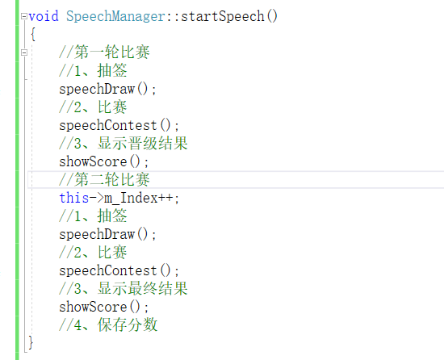
6.4 保存分数 功能描述：
功能实现：
在speechManager.h中添加保存记录的成员函数 void saveRecord(); 在speechManager.cpp中实现成员函数 void saveRecord(); 1 2 3 4 5 6 7 8 9 10 11 12 13 14 15 16 17 18 void SpeechManager::saveRecord () ofstream ofs; ofs.open ("speech.csv" , ios::out | ios::app); for (vector <int >::iterator it = vVictory.begin (); it != vVictory.end (); it++) { ofs << *it << "," << m_Speaker[*it].m_Score[1 ] << "," ; } ofs << endl ; ofs.close (); cout << "记录已经保存" << endl ; }
在startSpeech比赛流程控制的函数中，最后调用保存记录分数函数
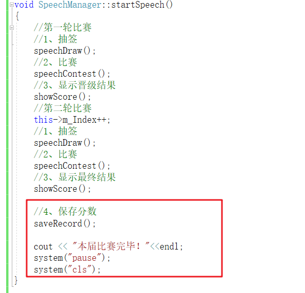
利用记事本打开文件 speech.csv，里面保存了前三名选手的编号以及得分
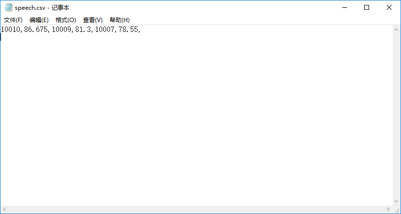
至此，整个演讲比赛功能制作完毕！
7、查看记录 7.1 读取记录分数 在speechManager.h中添加保存记录的成员函数 void loadRecord(); 添加判断文件是否为空的标志 bool fileIsEmpty; 添加往届记录的容器map<int, vector<string>> m_Record; 其中m_Record 中的key代表第几届，value记录具体的信息
1 2 3 4 5 6 7 8 void loadRecord () bool fileIsEmpty;map <int , vector <string >> m_Record;
在speechManager.cpp中实现成员函数 void loadRecord(); 1 2 3 4 5 6 7 8 9 10 11 12 13 14 15 16 17 18 19 20 21 22 23 24 25 26 27 28 29 30 31 32 33 34 35 36 37 38 39 40 41 42 43 44 45 46 47 48 49 50 51 52 53 54 55 56 void SpeechManager::loadRecord () ifstream ifs ("speech.csv" , ios::in) ; if (!ifs.is_open()) { this ->fileIsEmpty = true ; cout << "文件不存在！" << endl ; ifs.close (); return ; } char ch; ifs >> ch; if (ifs.eof()) { cout << "文件为空!" << endl ; this ->fileIsEmpty = true ; ifs.close (); return ; } this ->fileIsEmpty = false ; ifs.putback(ch); string data; int index = 0 ; while (ifs >> data) { vector <string >v; int pos = -1 ; int start = 0 ; while (true ) { pos = data.find ("," , start); if (pos == -1 ) { break ; } string tmp = data.substr(start, pos - start); v.push_back(tmp); start = pos + 1 ; } this ->m_Record.insert(make_pair (index, v)); index++; } ifs.close (); }
在SpeechManager构造函数中调用获取往届记录函数【初始载入往届信息】 7.2 查看记录功能 在speechManager.h中添加保存记录的成员函数 void showRecord(); 在speechManager.cpp中实现成员函数 void showRecord(); 1 2 3 4 5 6 7 8 9 10 11 12 void SpeechManager::showRecord () for (int i = 0 ; i < this ->m_Record.size (); i++) { cout << "第" << i + 1 << "届 " << "冠军编号：" << this ->m_Record[i][0 ] << " 得分：" << this ->m_Record[i][1 ] << " " "亚军编号：" << this ->m_Record[i][2 ] << " 得分：" << this ->m_Record[i][3 ] << " " "季军编号：" << this ->m_Record[i][4 ] << " 得分：" << this ->m_Record[i][5 ] << endl ; } system("pause" ); system("cls" ); }
7.3 测试功能 在main函数分支 2 选项中，调用查看记录的接口
显示效果如图：（本次测试添加了4条记录）
7.4 bug解决 目前程序中有几处bug未解决：
查看往届记录，若文件不存在或为空，并未提示 解决方式：在showRecord函数中，开始判断文件状态并加以判断
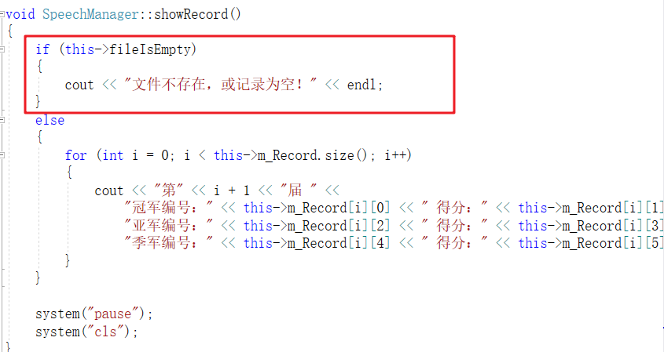
若记录为空或不存在，比完赛后依然提示记录为空 解决方式：saveRecord中更新文件为空的标志
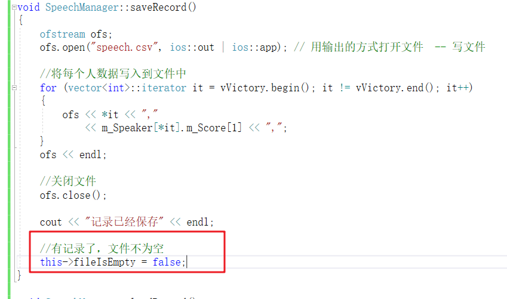
比完赛后查不到本届比赛的记录，没有实时更新 解决方式：比赛完毕后，所有数据重置
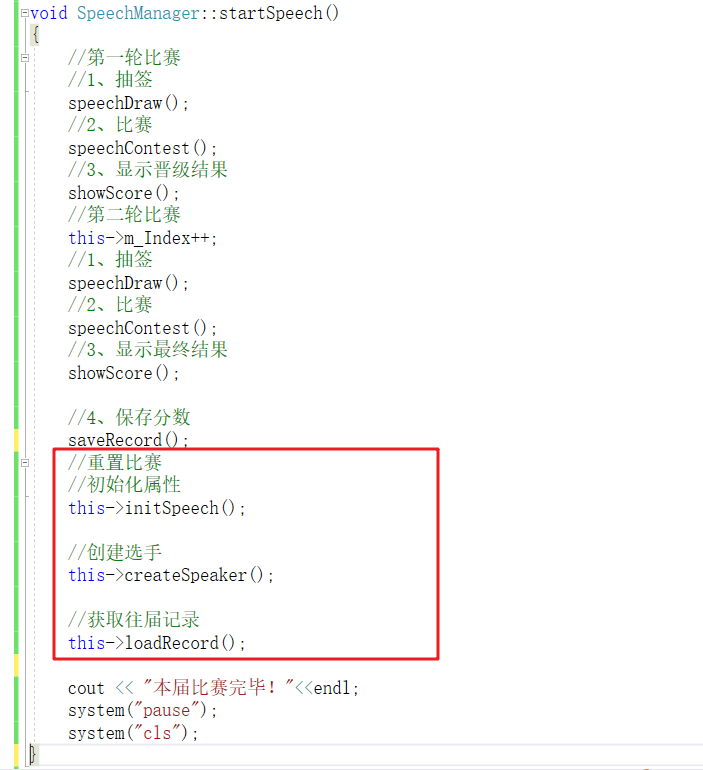
在初始化时，没有初始化记录容器 解决方式：initSpeech中添加 初始化记录容器
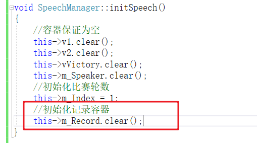
每次记录都是一样的 解决方式：在main函数一开始 添加随机数种子
1 srand((unsigned int )time(NULL ));
8、清空记录 8.1 清空记录功能实现 在speechManager.h中添加保存记录的成员函数 void clearRecord(); 在speechManager.cpp中实现成员函数 void clearRecord(); 1 2 3 4 5 6 7 8 9 10 11 12 13 14 15 16 17 18 19 20 21 22 23 24 25 26 27 28 29 30 31 void SpeechManager::clearRecord () cout << "确认清空？" << endl ; cout << "1、确认" << endl ; cout << "2、返回" << endl ; int select = 0 ; cin >> select; if (select == 1 ) { ofstream ofs ("speech.csv" , ios::trunc) ; ofs.close (); this ->initSpeech(); this ->createSpeaker(); this ->loadRecord(); cout << "清空成功！" << endl ; } system("pause" ); system("cls" ); }
8.2 测试清空 在main函数分支 3 选项中，调用清空比赛记录的接口
9、代码 9.1 头文件 speechManager.h
1 2 3 4 5 6 7 8 9 10 11 12 13 14 15 16 17 18 19 20 21 22 23 24 25 26 27 28 29 30 31 32 33 34 35 36 37 38 39 40 41 42 43 44 45 46 47 48 49 50 51 52 53 54 55 56 57 58 59 60 61 62 63 64 65 66 67 68 69 70 71 72 73 74 75 76 77 78 79 80 81 82 83 84 85 #pragma once #include <iostream> using namespace std ;#include <vector> #include <map> #include "speaker.h" #include <algorithm> #include <deque> #include <functional> #include <numeric> #include <string> #include <fstream> class SpeechManager { public : SpeechManager(); void show_Menu () void exitSystem () ~SpeechManager(); void initSpeech () void createSpeaker () void startSpeech () void speechDraw () void speechContest () void showScore () void saveRecord () void loadRecord () void showRecord () void clearRecord () bool fileIsEmpty; map <int , vector <string >>m_Record; vector <int >v1; vector <int >v2; vector <int >vVictory; map <int , Speaker>m_Speaker; int m_Index; };
9.2 头文件实现 speechManager.cpp
1 2 3 4 5 6 7 8 9 10 11 12 13 14 15 16 17 18 19 20 21 22 23 24 25 26 27 28 29 30 31 32 33 34 35 36 37 38 39 40 41 42 43 44 45 46 47 48 49 50 51 52 53 54 55 56 57 58 59 60 61 62 63 64 65 66 67 68 69 70 71 72 73 74 75 76 77 78 79 80 81 82 83 84 85 86 87 88 89 90 91 92 93 94 95 96 97 98 99 100 101 102 103 104 105 106 107 108 109 110 111 112 113 114 115 116 117 118 119 120 121 122 123 124 125 126 127 128 129 130 131 132 133 134 135 136 137 138 139 140 141 142 143 144 145 146 147 148 149 150 151 152 153 154 155 156 157 158 159 160 161 162 163 164 165 166 167 168 169 170 171 172 173 174 175 176 177 178 179 180 181 182 183 184 185 186 187 188 189 190 191 192 193 194 195 196 197 198 199 200 201 202 203 204 205 206 207 208 209 210 211 212 213 214 215 216 217 218 219 220 221 222 223 224 225 226 227 228 229 230 231 232 233 234 235 236 237 238 239 240 241 242 243 244 245 246 247 248 249 250 251 252 253 254 255 256 257 258 259 260 261 262 263 264 265 266 267 268 269 270 271 272 273 274 275 276 277 278 279 280 281 282 283 284 285 286 287 288 289 290 291 292 293 294 295 296 297 298 299 300 301 302 303 304 305 306 307 308 309 310 311 312 313 314 315 316 317 318 319 320 321 322 323 324 325 326 327 328 329 330 331 332 333 334 335 336 337 338 339 340 341 342 343 344 345 346 347 348 349 350 351 352 353 354 355 356 357 358 359 360 361 362 363 364 365 366 367 368 369 370 371 372 373 374 375 376 377 378 379 380 381 382 383 384 385 386 387 388 389 390 391 392 393 394 395 396 397 398 399 400 401 402 403 404 405 406 407 408 409 410 411 412 413 #include "speechManager.h" SpeechManager::SpeechManager() { this ->initSpeech(); this ->createSpeaker(); this ->loadRecord(); } void SpeechManager::show_Menu () cout << "********************************************" << endl ; cout << "************* 欢迎参加演讲比赛 ************" << endl ; cout << "************* 1.开始演讲比赛 *************" << endl ; cout << "************* 2.查看往届记录 *************" << endl ; cout << "************* 3.清空比赛记录 *************" << endl ; cout << "************* 0.退出比赛程序 *************" << endl ; cout << "********************************************" << endl ; cout << endl ; } void SpeechManager::exitSystem () cout << "欢迎下次使用" << endl ; system("pause" ); exit (0 ); } void SpeechManager::initSpeech () this ->v1.clear (); this ->v2.clear (); this ->vVictory.clear (); this ->m_Speaker.clear (); this ->m_Index = 1 ; this ->m_Record.clear (); } void SpeechManager::createSpeaker () string nameSeed = "ABCDEFGHIJKL" ; for (int i = 0 ; i < nameSeed.size (); i++) { string name = "选手" ; name += nameSeed[i]; Speaker sp; sp.m_Name = name; for (int j = 0 ; j < 2 ; j++) { sp.m_Score[j] = 0 ; } this ->v1.push_back(i + 10001 ); this ->m_Speaker.insert(make_pair (i + 10001 , sp)); } } void SpeechManager::startSpeech () this ->speechDraw(); this ->speechContest(); this ->showScore(); this ->m_Index++; this ->speechDraw(); speechContest(); this ->showScore(); this ->saveRecord(); this ->initSpeech(); this ->createSpeaker(); this ->loadRecord(); cout << "本届比赛完毕！" << endl ; system("pause" ); system("cls" ); } void SpeechManager::speechDraw () cout << "第 << " << this ->m_Index << " >> 轮比赛选手正在抽签" << endl ; cout << "--------------------------" << endl ; cout << "抽签后演讲顺序如下： " << endl ; if (this ->m_Index == 1 ) { random_shuffle(v1.begin (), v1.end ()); for (vector <int >::iterator it = v1.begin (); it != v1.end (); it++) { cout << *it << " " ; } cout << endl ; } else { random_shuffle(v2.begin (), v2.end ()); for (vector <int >::iterator it = v2.begin (); it != v2.end (); it++) { cout << *it << " " ; } cout << endl ; } cout << "--------------------------" << endl ; system("pause" ); cout << endl ; } void SpeechManager::speechContest () cout << "----------- 第" << this ->m_Index << " 轮比赛正式开始 --------------" << endl ; multimap <double , int , greater<double >> groupScore; int num = 0 ; vector <int >v_Src; if (this ->m_Index == 1 ) { v_Src = v1; } else { v_Src = v2; } for (vector <int >::iterator it = v_Src.begin (); it != v_Src.end (); it++) { num++; deque <double >d; for (int i = 0 ; i < 10 ; i++) { double score = (rand() % 401 + 600 ) / 10.f ; d.push_back(score); } sort(d.begin (), d.end (), greater<double >()); d.pop_front(); d.pop_back(); double sum = accumulate(d.begin (), d.end (), 0.0f ); double avg = sum / (double )d.size (); this ->m_Speaker[*it].m_Score[this ->m_Index - 1 ] = avg; groupScore.insert(make_pair (avg, *it)); if (num % 6 == 0 ) { cout << "第" << num / 6 << "小组比赛名次： " << endl ; for (multimap <double , int , greater<double >>::iterator it = groupScore.begin (); it != groupScore.end (); it++) { cout << "编号： " << it->second << " 姓名： " << this ->m_Speaker[it->second].m_Name << " 成绩： " << this ->m_Speaker[it->second].m_Score[this ->m_Index - 1 ] << endl ; } int count = 0 ; for (multimap <double , int , greater<double >>::iterator it = groupScore.begin (); it != groupScore.end () && count < 3 ; it++, count++) { if (this ->m_Index == 1 ) { v2.push_back((*it).second); } else { vVictory.push_back((*it).second); } } groupScore.clear (); cout << endl ; } } cout << "------------------ 第" << this ->m_Index << "轮比赛完毕 --------------" << endl ; system("pause" ); } void SpeechManager::showScore () cout << "------------------ 第" << this ->m_Index << "轮晋级选手信息如下： -------------------" << endl ; vector <int >v; if (this ->m_Index == 1 ) { v = v2; } else { v = vVictory; } for (vector <int >::iterator it = v.begin (); it != v.end (); it++) { cout << "选手编号： " << *it << " 姓名： " << this ->m_Speaker[*it].m_Name << " 得分： " << this ->m_Speaker[*it].m_Score[this ->m_Index - 1 ] << endl ; } cout << endl ; system("pause" ); system("cls" ); this ->show_Menu(); } void SpeechManager::saveRecord () ofstream ofs; ofs.open ("speech.csv" , ios::out | ios::app); for (vector <int >::iterator it = vVictory.begin (); it != vVictory.end (); it++) { ofs << *it << "," << this ->m_Speaker[*it].m_Score[1 ] << "," ; } ofs << endl ; ofs.close (); cout << "记录已经保存" << endl ; this ->fileIsEmpty = false ; } void SpeechManager::loadRecord () ifstream ifs ("speech.csv" , ios::in) ; if (!ifs.is_open()) { this ->fileIsEmpty = true ; ifs.close (); return ; } char ch; ifs >> ch; if (ifs.eof()) { this ->fileIsEmpty = true ; ifs.close (); return ; } this ->fileIsEmpty = false ; ifs.putback(ch); string data; int index = 0 ; while (ifs >> data) { vector <string >v; int pos = -1 ; int start = 0 ; while (true ) { pos = data.find ("," , start); if (pos == -1 ) { break ; } string temp = data.substr(start, pos - start); v.push_back(temp); start = pos + 1 ; } this ->m_Record.insert(make_pair (index, v)); index++; } ifs.close (); } void SpeechManager::showRecord () if (this ->fileIsEmpty) { cout << "文件为空或者文件不存在！" << endl ; } else { for (int i = 0 ; i < this ->m_Record.size (); i++) { cout << "第" << i + 1 << "届 " << "冠军编号：" << this ->m_Record[i][0 ] << " 得分： " << this ->m_Record[i][1 ] << " " << "亚军编号：" << this ->m_Record[i][2 ] << " 得分： " << this ->m_Record[i][3 ] << " " << "季军编号：" << this ->m_Record[i][4 ] << " 得分： " << this ->m_Record[i][5 ] << endl ; } } system("pause" ); system("cls" ); } void SpeechManager::clearRecord () cout << "是否确定清空文件？" << endl ; cout << "1、是" << endl ; cout << "2、否" << endl ; int select = 0 ; cin >> select; if (select == 1 ) { ofstream ofs ("speech.csv" , ios::trunc) ; ofs.close (); this ->initSpeech(); this ->createSpeaker(); this ->loadRecord(); cout << "清空成功！" << endl ; } system("pause" ); system("cls" ); } SpeechManager::~SpeechManager() { }
9.3 主文件 演讲比赛流程管理系统.cpp
1 2 3 4 5 6 7 8 9 10 11 12 13 14 15 16 17 18 19 20 21 22 23 24 25 26 27 28 29 30 31 32 33 34 35 36 37 38 39 40 41 42 43 44 45 46 47 48 49 50 51 #include <iostream> using namespace std ;#include "speechManager.h" #include <string> #include <ctime> int main () srand((unsigned int )time(NULL )); SpeechManager sm; int choice = 0 ; while (true ) { sm.show_Menu(); cout << "请输入您的选择： " << endl ; cin >> choice; switch (choice) { case 1 : sm.startSpeech(); break ; case 2 : sm.showRecord(); break ; case 3 : sm.clearRecord(); break ; case 0 : sm.exitSystem(); break ; default : system("cls" ); break ; } } system("pause" ); return 0 ; }
二、机房预约系统 1、机房预约系统需求 1.1 系统简介 学校现有几个规格不同的机房，由于使用时经常出现”撞车”现象,现开发一套机房预约系统，解决这一问题。
1.2 身份简介 分别有三种身份使用该程序
学生代表 ：申请使用机房教师 ：审核学生的预约申请管理员 ：给学生、教师创建账号1.3 机房简介 机房总共有3间
1号机房 — 最大容量20人 2号机房 — 最多容量50人 3号机房 — 最多容量100人 1.4 申请简介 申请的订单每周由管理员负责清空。 学生可以预约未来一周内的机房使用，预约的日期为周一至周五，预约时需要选择预约时段（上午、下午） 教师来审核预约，依据实际情况审核预约通过或者不通过 1.5 系统具体需求 首先进入登录界面，可选登录身份有： 每个身份都需要进行验证后，进入子菜单学生需要输入 ：学号、姓名、登录密码 老师需要输入：职工号、姓名、登录密码 管理员需要输入：管理员姓名、登录密码 学生具体功能申请预约 — 预约机房 查看自身的预约 — 查看自己的预约状态 查看所有预约 — 查看全部预约信息以及预约状态 取消预约 — 取消自身的预约，预约成功或审核中的预约均可取消 注销登录 — 退出登录 教师具体功能查看所有预约 — 查看全部预约信息以及预约状态 审核预约 — 对学生的预约进行审核 注销登录 — 退出登录 管理员具体功能添加账号 — 添加学生或教师的账号，需要检测学生编号或教师职工号是否重复 查看账号 — 可以选择查看学生或教师的全部信息 查看机房 — 查看所有机房的信息 清空预约 — 清空所有预约记录 注销登录 — 退出登录
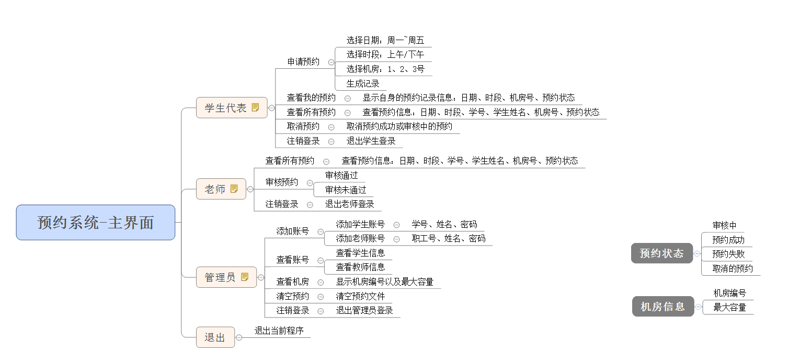
2、创建项目 创建项目步骤如下：
2.1 创建项目 打开vs2017后，点击创建新项目，创建新的C++项目 填写项目名称以及选取项目路径，点击确定生成项目【空项目】 2.2 添加文件 填写文件名称，点击添加【机房预约系统.cpp】
生成文件成功
3、创建主菜单 功能描述：
3.1 菜单实现 1 2 3 4 5 6 7 8 9 10 11 12 13 14 15 16 17 18 19 20 21 22 int main () cout << "====================== 欢迎来到传智播客机房预约系统 =====================" << endl ; cout << endl << "请输入您的身份" << endl ; cout << "\t\t -------------------------------\n" ; cout << "\t\t| |\n" ; cout << "\t\t| 1.学生代表 |\n" ; cout << "\t\t| |\n" ; cout << "\t\t| 2.老 师 |\n" ; cout << "\t\t| |\n" ; cout << "\t\t| 3.管 理 员 |\n" ; cout << "\t\t| |\n" ; cout << "\t\t| 0.退 出 |\n" ; cout << "\t\t| |\n" ; cout << "\t\t -------------------------------\n" ; cout << "输入您的选择: " ; system("pause" ); return 0 ; }
运行效果如图：
3.2 搭建接口 1 2 3 4 5 6 7 8 9 10 11 12 13 14 15 16 17 18 19 20 21 22 23 24 25 26 27 28 29 30 31 32 33 34 35 36 37 38 39 40 41 42 43 44 45 int main () int select = 0 ; while (true ) { cout << "====================== 欢迎来到传智播客机房预约系统 =====================" << endl ; cout << endl << "请输入您的身份" << endl ; cout << "\t\t -------------------------------\n" ; cout << "\t\t| |\n" ; cout << "\t\t| 1.学生代表 |\n" ; cout << "\t\t| |\n" ; cout << "\t\t| 2.老 师 |\n" ; cout << "\t\t| |\n" ; cout << "\t\t| 3.管 理 员 |\n" ; cout << "\t\t| |\n" ; cout << "\t\t| 0.退 出 |\n" ; cout << "\t\t| |\n" ; cout << "\t\t -------------------------------\n" ; cout << "输入您的选择: " ; cin >> select; switch (select) { case 1 : break ; case 2 : break ; case 3 : break ; case 0 : break ; default : cout << "输入有误，请重新选择！" << endl ; system("pause" ); system("cls" ); break ; } } system("pause" ); return 0 ; }
测试，输入0、1、2、3会重新回到界面，输入其他提示输入有误，清屏后重新选择
4、 退出功能实现 4.1 退出功能实现 在main函数分支 0 选项中，添加退出程序的代码：
1 2 3 cout << "欢迎下一次使用" <<endl ;system("pause" ); return 0 ;
4.2 测试退出功能 5、创建身份类 5.1 身份的基类 在整个系统中，有三种身份，分别为：学生代表、老师以及管理员 三种身份有其共性也有其特性，因此我们可以将三种身份抽象出一个身份基类identity 在头文件下创建Identity.h文件 Identity.h中添加如下代码：
1 2 3 4 5 6 7 8 9 10 11 12 13 14 15 #pragma once #include <iostream> using namespace std ;class Identity { public : virtual void operMenu () 0 ; string m_Name; string m_Pwd; };
5.2 学生类 5.2.1 功能分析 5.2.2 类的创建 在头文件以及源文件下创建 student.h 和 student.cpp文件 student.h中添加如下代码：
1 2 3 4 5 6 7 8 9 10 11 12 13 14 15 16 17 18 19 20 21 22 23 24 25 26 27 28 29 30 31 32 33 34 #pragma once #include <iostream> using namespace std ;#include "identity.h" class Student :public Identity{ public : Student(); Student(int id, string name, string pwd); virtual void operMenu () void applyOrder () void showMyOrder () void showAllOrder () void cancelOrder () int m_Id; };
student.cpp中添加如下代码：
1 2 3 4 5 6 7 8 9 10 11 12 13 14 15 16 17 18 19 20 21 22 23 24 25 26 27 28 29 30 31 32 33 34 35 36 37 38 39 40 41 #include "student.h" Student::Student() { } Student::Student(int id, string name, string pwd) { } void Student::operMenu () } void Student::applyOrder () } void Student::showMyOrder () } void Student::showAllOrder () } void Student::cancelOrder () }
5.3 老师类 5.3.1 功能分析 教师类主要功能是查看学生的预约，并进行审核
教师类中主要功能有：
5.3.2 类的创建 在头文件以及源文件下创建 teacher.h 和 teacher.cpp文件 teacher.h中添加如下代码：
1 2 3 4 5 6 7 8 9 10 11 12 13 14 15 16 17 18 19 20 21 22 23 24 25 26 27 28 #pragma once #define _CRT_SECURE_NO_WARNINGS #include <iostream> using namespace std ;#include "identity.h" class Teacher :public Identity{ public : Teacher(); Teacher(int empId, string name, string pwd); virtual void operMenu () void showAllOrder () void validOrder () int m_EmpId; };
1 2 3 4 5 6 7 8 9 10 11 12 13 14 15 16 17 18 19 20 21 22 23 24 25 26 #include "teacher.h" Teacher::Teacher() { } Teacher::Teacher(int empId, string name, string pwd) { } void Teacher::operMenu () } void Teacher::showAllOrder () } void Teacher::validOrder () }
5.4 管理员类 5.4.1 功能分析 5.4.2 类的创建 在头文件以及源文件下创建 manager.h 和 manager.cpp文件 manager.h中添加如下代码：
1 2 3 4 5 6 7 8 9 10 11 12 13 14 15 16 17 18 19 20 21 22 23 24 25 26 27 28 29 30 31 #pragma once #include <iostream> using namespace std ;#include "identity.h" class Manager :public Identity{ public : Manager(); Manager(string name, string pwd); virtual void operMenu () void addPerson () void showPerson () void showComputer () void cleanFile () };
1 2 3 4 5 6 7 8 9 10 11 12 13 14 15 16 17 18 19 20 21 22 23 24 25 26 27 28 29 30 31 32 33 34 35 36 #include "manager.h" Manager::Manager() { } Manager::Manager(string name, string pwd) { } void Manager::operMenu () } void Manager::addPerson () } void Manager::showPerson () } void Manager::showComputer () } void Manager::cleanFile () }
至此，所有身份类创建完毕，效果如图：
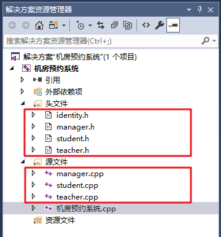
6、 登录模块 6.1 全局文件添加 功能描述：
不同的身份可能会用到不同的文件操作，我们可以将所有的文件名定义到一个全局的文件中 在头文件中添加 globalFile.h 文件 并添加如下代码： 1 2 3 4 5 6 7 8 9 10 11 12 #pragma once #define ADMIN_FILE "admin.txt" #define STUDENT_FILE "student.txt" #define TEACHER_FILE "teacher.txt" #define COMPUTER_FILE "computerRoom.txt" #define ORDER_FILE "order.txt"
并且在同级目录下，创建这几个文件
6.2 登录函数封装 功能描述：
在预约系统的.cpp文件中添加全局函数 void LoginIn(string fileName, int type)
参数：
fileName — 操作的文件名 type — 登录的身份 （1代表学生、2代表老师、3代表管理员） LoginIn中添加如下代码：
1 2 3 4 5 6 7 8 9 10 11 12 13 14 15 16 17 18 19 20 21 22 23 24 25 26 27 28 29 30 31 32 33 34 35 36 37 38 39 40 41 42 43 44 45 46 47 48 49 50 51 52 53 54 55 56 57 58 59 60 61 62 63 64 #include "globalFile.h" #include "identity.h" #include <fstream> #include <string> void LoginIn (string fileName, int type) Identity * person = NULL ; ifstream ifs; ifs.open (fileName, ios::in); if (!ifs.is_open()) { cout << "文件不存在" << endl ; ifs.close (); return ; } int id = 0 ; string name; string pwd; if (type == 1 ) { cout << "请输入你的学号" << endl ; cin >> id; } else if (type == 2 ) { cout << "请输入你的职工号" << endl ; cin >> id; } cout << "请输入用户名：" << endl ; cin >> name; cout << "请输入密码： " << endl ; cin >> pwd; if (type == 1 ) { } else if (type == 2 ) { } else if (type == 3 ) { } cout << "验证登录失败!" << endl ; system("pause" ); system("cls" ); return ; }
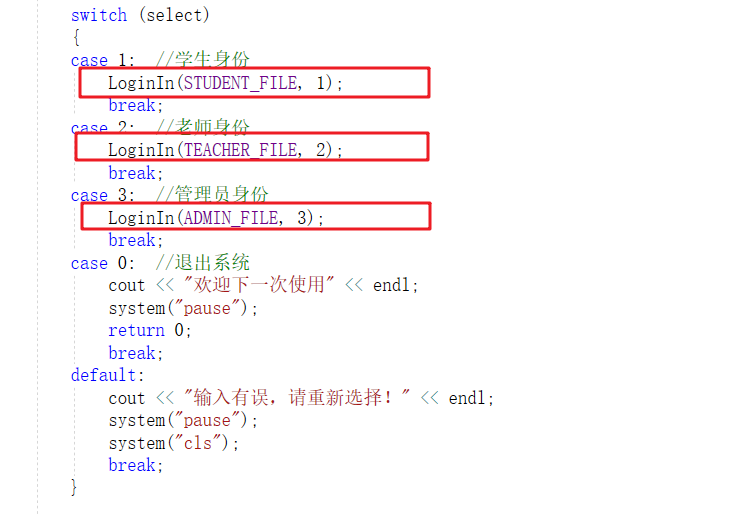
6.3 学生登录实现 在student.txt文件中添加两条学生信息，用于测试
添加信息:
其中：
第一列 代表 学号 第二列 代表 学生姓名 第三列 代表 密码 在Login函数的学生分支中加入如下代码，验证学生身份
1 2 3 4 5 6 7 8 9 10 11 12 13 14 15 16 int fId;string fName;string fPwd;while (ifs >> fId && ifs >> fName && ifs >> fPwd){ if (id == fId && name == fName && pwd == fPwd) { cout << "学生验证登录成功!" << endl ; system("pause" ); system("cls" ); person = new Student(id, name, pwd); return ; } }
6.4 教师登录实现 在teacher.txt文件中添加一条老师信息，用于测试
添加信息:
其中：
第一列 代表 教师职工编号 第二列 代表 教师姓名 第三列 代表 密码 在Login函数的教师分支中加入如下代码，验证教师身份
1 2 3 4 5 6 7 8 9 10 11 12 13 14 15 int fId;string fName;string fPwd;while (ifs >> fId && ifs >> fName && ifs >> fPwd){ if (id == fId && name == fName && pwd == fPwd) { cout << "教师验证登录成功!" << endl ; system("pause" ); system("cls" ); person = new Teacher(id, name, pwd); return ; } }
6.5 管理员登录实现 在admin.txt文件中添加一条管理员信息，由于我们只有一条管理员，因此本案例中没有添加管理员的功能
添加信息:
其中：admin代表管理员用户名，123代表管理员密码
在Login函数的管理员分支中加入如下代码，验证管理员身份
1 2 3 4 5 6 7 8 9 10 11 12 13 14 15 16 string fName; string fPwd; while (ifs >> fName && ifs >> fPwd) { if (name == fName && pwd == fPwd) { cout << "验证登录成功!" << endl ; system("pause" ); system("cls" ); person = new Manager(name,pwd); return ; } }
7、 管理员模块 7.1 管理员登录和注销 7.1.1 构造函数 在Manager类的构造函数中，初始化管理员信息，代码如下： 1 2 3 4 5 6 Manager::Manager(string name, string pwd) { this ->m_Name = name; this ->m_Pwd = pwd; }
7.1.2 管理员子菜单 在机房预约系统.cpp中，当用户登录的是管理员，添加管理员菜单接口 将不同的分支提供出来 实现注销功能 添加全局函数 void managerMenu(Identity * &manager)，代码如下：
1 2 3 4 5 6 7 8 9 10 11 12 13 14 15 16 17 18 19 20 21 22 23 24 25 26 27 28 29 30 31 32 33 34 35 36 37 38 39 40 41 42 43 void managerMenu (Identity * &manager) while (true ) { manager->operMenu(); Manager* man = (Manager*)manager; int select = 0 ; cin >> select; if (select == 1 ) { cout << "添加账号" << endl ; man->addPerson(); } else if (select == 2 ) { cout << "查看账号" << endl ; man->showPerson(); } else if (select == 3 ) { cout << "查看机房" << endl ; man->showComputer(); } else if (select == 4 ) { cout << "清空预约" << endl ; man->cleanFile(); } else { delete manager; cout << "注销成功" << endl ; system("pause" ); system("cls" ); return ; } } }
7.1.3 菜单功能实现 在实现成员函数void Manager::operMenu() 代码如下： 1 2 3 4 5 6 7 8 9 10 11 12 13 14 15 16 17 18 19 void Manager::operMenu () cout << "欢迎管理员：" <<this ->m_Name << "登录！" << endl ; cout << "\t\t ---------------------------------\n" ; cout << "\t\t| |\n" ; cout << "\t\t| 1.添加账号 |\n" ; cout << "\t\t| |\n" ; cout << "\t\t| 2.查看账号 |\n" ; cout << "\t\t| |\n" ; cout << "\t\t| 3.查看机房 |\n" ; cout << "\t\t| |\n" ; cout << "\t\t| 4.清空预约 |\n" ; cout << "\t\t| |\n" ; cout << "\t\t| 0.注销登录 |\n" ; cout << "\t\t| |\n" ; cout << "\t\t ---------------------------------\n" ; cout << "请选择您的操作： " << endl ; }
7.1.4 接口对接 管理员成功登录后，调用管理员子菜单界面 在管理员登录验证分支中，添加代码： 添加效果如：
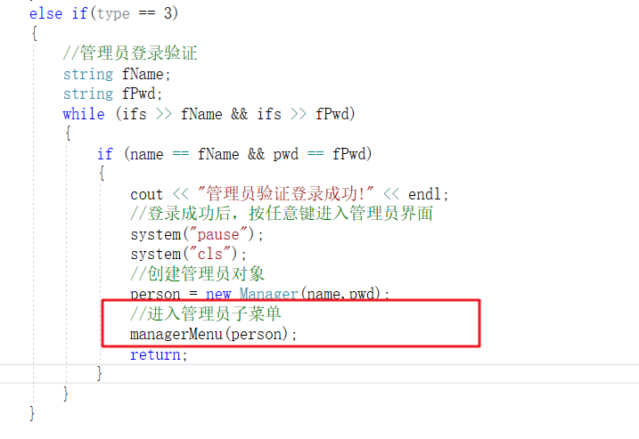
7.2 添加账号 功能描述：
功能要求：
7.2.1 添加功能实现 在Manager的addPerson 成员函数中，实现添加新账号功能，代码如下：
1 2 3 4 5 6 7 8 9 10 11 12 13 14 15 16 17 18 19 20 21 22 23 24 25 26 27 28 29 30 31 32 33 34 35 36 37 38 39 40 41 42 43 44 45 46 47 void Manager::addPerson () cout << "请输入添加账号的类型" << endl ; cout << "1、添加学生" << endl ; cout << "2、添加老师" << endl ; string fileName; string tip; ofstream ofs; int select = 0 ; cin >> select; if (select == 1 ) { fileName = STUDENT_FILE; tip = "请输入学号： " ; } else { fileName = TEACHER_FILE; tip = "请输入职工编号：" ; } ofs.open (fileName, ios::out | ios::app); int id; string name; string pwd; cout <<tip << endl ; cin >> id; cout << "请输入姓名： " << endl ; cin >> name; cout << "请输入密码： " << endl ; cin >> pwd; ofs << id << " " << name << " " << pwd << " " << endl ; cout << "添加成功" << endl ; system("pause" ); system("cls" ); ofs.close (); }
测试添加学生：
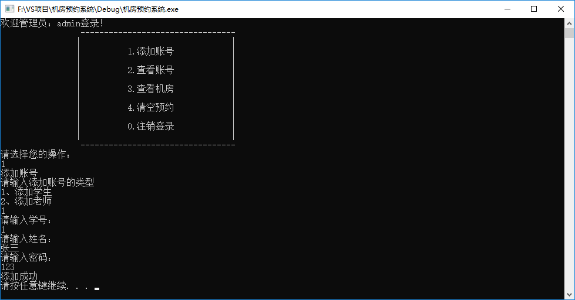
7.2.2 去重操作 功能描述：添加新账号时，如果是重复的学生编号，或是重复的教师职工编号，提示有误
7.2.2.1 读取信息 要去除重复的账号，首先要先将学生和教师的账号信息获取到程序中，方可检测 在manager.h中，添加两个容器，用于存放学生和教师的信息 添加一个新的成员函数 void initVector() 初始化容器 1 2 3 4 5 6 7 8 void initVector () vector <Student> vStu;vector <Teacher> vTea;
添加位置如图：
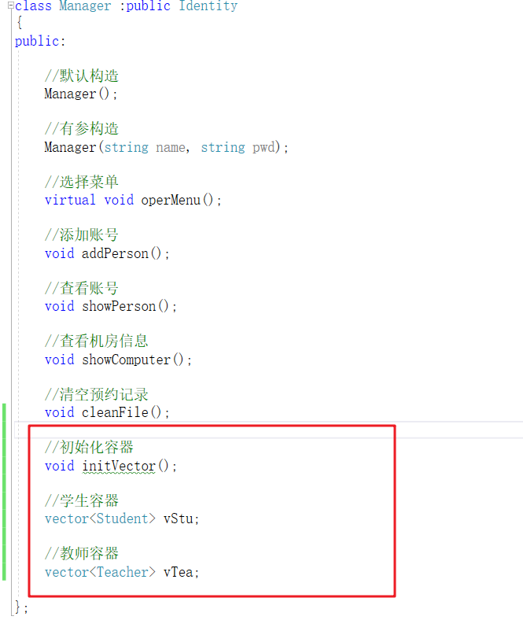
在Manager的有参构造函数中，获取目前的学生和教师信息
代码如下：
1 2 3 4 5 6 7 8 9 10 11 12 13 14 15 16 17 18 19 20 21 22 23 24 25 26 27 28 29 30 31 32 33 34 void Manager::initVector () ifstream ifs; ifs.open (STUDENT_FILE, ios::in); if (!ifs.is_open()) { cout << "文件读取失败" << endl ; return ; } vStu.clear (); vTea.clear (); Student s; while (ifs >> s.m_Id && ifs >> s.m_Name && ifs >> s.m_Pwd) { vStu.push_back(s); } cout << "当前学生数量为： " << vStu.size () << endl ; ifs.close (); ifs.open (TEACHER_FILE, ios::in); Teacher t; while (ifs >> t.m_EmpId && ifs >> t.m_Name && ifs >> t.m_Pwd) { vTea.push_back(t); } cout << "当前教师数量为： " << vTea.size () << endl ; ifs.close (); }
在有参构造函数中，调用初始化容器函数
1 2 3 4 5 6 7 8 9 Manager::Manager(string name, string pwd) { this ->m_Name = name; this ->m_Pwd = pwd; this ->initVector(); }
7.2.2.2 去重函数封装 在manager.h文件中添加成员函数bool checkRepeat(int id, int type);
1 2 bool checkRepeat (int id, int type)
在manager.cpp文件中实现成员函数 bool checkRepeat(int id, int type);
1 2 3 4 5 6 7 8 9 10 11 12 13 14 15 16 17 18 19 20 21 22 23 24 bool Manager::checkRepeat (int id, int type) if (type == 1 ) { for (vector <Student>::iterator it = vStu.begin (); it != vStu.end (); it++) { if (id == it->m_Id) { return true ; } } } else { for (vector <Teacher>::iterator it = vTea.begin (); it != vTea.end (); it++) { if (id == it->m_EmpId) { return true ; } } } return false ; }
7.2.2.3 添加去重操作 在添加学生编号或者教师职工号时，检测是否有重复，代码如下：
1 2 3 4 5 6 7 8 9 10 11 12 13 14 15 16 17 18 19 20 21 22 23 24 25 26 27 28 29 30 31 32 33 34 35 string errorTip; if (select == 1 ){ fileName = STUDENT_FILE; tip = "请输入学号： " ; errorTip = "学号重复，请重新输入" ; } else { fileName = TEACHER_FILE; tip = "请输入职工编号：" ; errorTip = "职工号重复，请重新输入" ; } ofs.open (fileName, ios::out | ios::app); int id;string name;string pwd;cout <<tip << endl ;while (true ){ cin >> id; bool ret = this ->checkRepeat(id, 1 ); if (ret) { cout << errorTip << endl ; } else { break ; } }
7.2.2.4 bug解决 bug描述：
虽然可以检测重复的账号，但是刚添加的账号由于没有更新到容器中，因此不会做检测 导致刚加入的账号的学生号或者职工编号，再次添加时依然可以重复 解决方案：
在添加完毕后，加入代码：
7.3 显示账号 功能描述：显示学生信息或教师信息
7.3.1 显示功能实现 在Manager的showPerson 成员函数中，实现显示账号功能，代码如下：
1 2 3 4 5 6 7 8 9 10 11 12 13 14 15 16 17 18 19 20 21 22 23 24 25 26 27 28 29 30 31 32 void printStudent (Student & s) cout << "学号： " << s.m_Id << " 姓名： " << s.m_Name << " 密码：" << s.m_Pwd << endl ; } void printTeacher (Teacher & t) cout << "职工号： " << t.m_EmpId << " 姓名： " << t.m_Name << " 密码：" << t.m_Pwd << endl ; } void Manager::showPerson () cout << "请选择查看内容：" << endl ; cout << "1、查看所有学生" << endl ; cout << "2、查看所有老师" << endl ; int select = 0 ; cin >> select; if (select == 1 ) { cout << "所有学生信息如下： " << endl ; for_each(vStu.begin (), vStu.end (), printStudent); } else { cout << "所有老师信息如下： " << endl ; for_each(vTea.begin (), vTea.end (), printTeacher); } system("pause" ); system("cls" ); }
7.3.2 测试 7.4 查看机房 7.4.1 添加机房信息 案例需求中，机房一共有三个，其中1号机房容量20台机器，2号50台，3号100台
我们可以将信息录入到computerRoom.txt中
7.4.2 机房类创建 在头文件下，创建新的文件 computerRoom.h
并添加如下代码：
1 2 3 4 5 6 7 8 9 10 11 12 #pragma once #include <iostream> using namespace std ;class ComputerRoom { public : int m_ComId; int m_MaxNum; };
7.4.3 初始化机房信息 在Manager管理员类下，添加机房的容器,用于保存机房信息
1 2 vector <ComputerRoom> vCom;
在Manager有参构造函数中，追加如下代码，初始化机房信息
1 2 3 4 5 6 7 8 9 10 11 12 13 ifstream ifs; ifs.open (COMPUTER_FILE, ios::in); ComputerRoom c; while (ifs >> c.m_ComId && ifs >> c.m_MaxNum){ vCom.push_back(c); } cout << "当前机房数量为： " << vCom.size () << endl ;ifs.close ();
因为机房信息目前版本不会有所改动，如果后期有修改功能，最好封装到一个函数中，方便维护
7.4.4 显示机房信息 在Manager类的showComputer成员函数中添加如下代码：
1 2 3 4 5 6 7 8 9 10 11 void Manager::showComputer () cout << "机房信息如下： " << endl ; for (vector <ComputerRoom>::iterator it = vCom.begin (); it != vCom.end (); it++) { cout << "机房编号： " << it->m_ComId << " 机房最大容量： " << it->m_MaxNum << endl ; } system("pause" ); system("cls" ); }
测试显示机房信息功能
7.5 清空预约 功能描述：
清空生成的order.txt预约文件
7.5.1 清空功能实现 在Manager的cleanFile成员函数中添加如下代码：
1 2 3 4 5 6 7 8 9 10 void Manager::cleanFile () ofstream ofs (ORDER_FILE, ios::trunc) ; ofs.close (); cout << "清空成功！" << endl ; system("pause" ); system("cls" ); }
测试清空，可以随意写入一些信息在order.txt中，然后调用cleanFile清空文件接口，查看是否清空干净
8、 学生模块 8.1 学生登录和注销 8.1.1 构造函数 在Student类的构造函数中，初始化学生信息，代码如下： 1 2 3 4 5 6 7 8 Student::Student(int id, string name, string pwd) { this ->m_Id = id; this ->m_Name = name; this ->m_Pwd = pwd; }
8.1.2 管理员子菜单 在机房预约系统.cpp中，当用户登录的是学生，添加学生菜单接口 将不同的分支提供出来 实现注销功能 添加全局函数 void studentMenu(Identity * &manager) 代码如下：
1 2 3 4 5 6 7 8 9 10 11 12 13 14 15 16 17 18 19 20 21 22 23 24 25 26 27 28 29 30 31 32 33 34 35 36 37 38 39 void studentMenu (Identity * &student) while (true ) { student->operMenu(); Student* stu = (Student*)student; int select = 0 ; cin >> select; if (select == 1 ) { stu->applyOrder(); } else if (select == 2 ) { stu->showMyOrder(); } else if (select == 3 ) { stu->showAllOrder(); } else if (select == 4 ) { stu->cancelOrder(); } else { delete student; cout << "注销成功" << endl ; system("pause" ); system("cls" ); return ; } } }
8.1.3 菜单功能实现 在实现成员函数void Student::operMenu() 代码如下： 1 2 3 4 5 6 7 8 9 10 11 12 13 14 15 16 17 18 19 void Student::operMenu () cout << "欢迎学生代表：" << this ->m_Name << "登录！" << endl ; cout << "\t\t ----------------------------------\n" ; cout << "\t\t| |\n" ; cout << "\t\t| 1.申请预约 |\n" ; cout << "\t\t| |\n" ; cout << "\t\t| 2.查看我的预约 |\n" ; cout << "\t\t| |\n" ; cout << "\t\t| 3.查看所有预约 |\n" ; cout << "\t\t| |\n" ; cout << "\t\t| 4.取消预约 |\n" ; cout << "\t\t| |\n" ; cout << "\t\t| 0.注销登录 |\n" ; cout << "\t\t| |\n" ; cout << "\t\t ----------------------------------\n" ; cout << "请选择您的操作： " << endl ; }
8.1.4 接口对接 学生成功登录后，调用学生的子菜单界面 在学生登录分支中，添加代码： 添加效果如图：
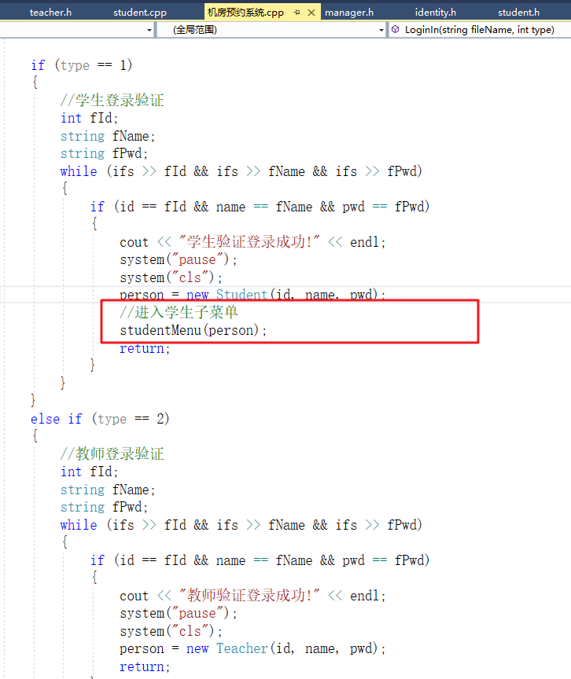
8.2 申请预约 8.2.1 获取机房信息 在申请预约时，学生可以看到机房的信息，因此我们需要让学生获取到机房的信息 在student.h中添加新的成员函数如下：
1 2 vector <ComputerRoom> vCom;
在学生的有参构造函数中追加如下代码：
1 2 3 4 5 6 7 8 9 10 11 ifstream ifs; ifs.open (COMPUTER_FILE, ios::in); ComputerRoom c; while (ifs >> c.m_ComId && ifs >> c.m_MaxNum){ vCom.push_back(c); } ifs.close ();
追加位置如图：
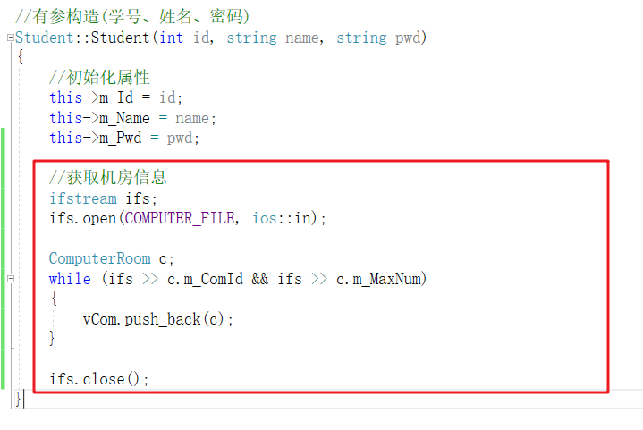
至此，vCom容器中保存了所有机房的信息
8.2.2 预约功能实现 在student.cpp中实现成员函数 void Student::applyOrder()
1 2 3 4 5 6 7 8 9 10 11 12 13 14 15 16 17 18 19 20 21 22 23 24 25 26 27 28 29 30 31 32 33 34 35 36 37 38 39 40 41 42 43 44 45 46 47 48 49 50 51 52 53 54 55 56 57 58 59 60 61 62 63 64 65 66 67 68 69 void Student::applyOrder () cout << "机房开放时间为周一至周五！" << endl ; cout << "请输入申请预约的时间：" << endl ; cout << "1、周一" << endl ; cout << "2、周二" << endl ; cout << "3、周三" << endl ; cout << "4、周四" << endl ; cout << "5、周五" << endl ; int date = 0 ; int interval = 0 ; int room = 0 ; while (true ) { cin >> date; if (date >= 1 && date <= 5 ) { break ; } cout << "输入有误，请重新输入" << endl ; } cout << "请输入申请预约的时间段：" << endl ; cout << "1、上午" << endl ; cout << "2、下午" << endl ; while (true ) { cin >> interval; if (interval >= 1 && interval <= 2 ) { break ; } cout << "输入有误，请重新输入" << endl ; } cout << "请选择机房：" << endl ; cout << "1号机房容量：" << vCom[0 ].m_MaxNum << endl ; cout << "2号机房容量：" << vCom[1 ].m_MaxNum << endl ; cout << "3号机房容量：" << vCom[2 ].m_MaxNum << endl ; while (true ) { cin >> room; if (room >= 1 && room <= 3 ) { break ; } cout << "输入有误，请重新输入" << endl ; } cout << "预约成功！审核中" << endl ; ofstream ofs (ORDER_FILE, ios::app) ; ofs << "date:" << date << " " ; ofs << "interval:" << interval << " " ; ofs << "stuId:" << this ->m_Id << " " ; ofs << "stuName:" << this ->m_Name << " " ; ofs << "roomId:" << room << " " ; ofs << "status:" << 1 << endl ; ofs.close (); system("pause" ); system("cls" ); }
在order.txt文件中生成如下内容：
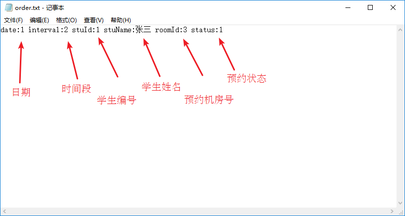
8.3 显示预约 8.3.1 创建预约类 功能描述：显示预约记录时，需要从文件中获取到所有记录，用来显示，创建预约的类来管理记录以及更新
在头文件以及源文件下分别创建orderFile.h 和 orderFile.cpp 文件
orderFile.h中添加如下代码：
1 2 3 4 5 6 7 8 9 10 11 12 13 14 15 16 17 18 19 20 21 22 #pragma once #include <iostream> using namespace std ;#include <map> #include "globalFile.h" class OrderFile { public : OrderFile(); void updateOrder () map <int , map <string , string >> m_orderData; int m_Size; };
构造函数 中获取所有信息，并存放在容器中，添加如下代码：
1 2 3 4 5 6 7 8 9 10 11 12 13 14 15 16 17 18 19 20 21 22 23 24 25 26 27 28 29 30 31 32 33 34 35 36 37 38 39 40 41 42 43 44 45 46 47 48 49 50 51 52 53 54 55 56 57 58 59 60 61 62 63 64 65 66 67 68 69 70 71 72 73 74 75 76 77 78 79 80 81 82 83 84 85 86 87 88 89 90 91 92 93 94 95 96 97 98 OrderFile::OrderFile() { ifstream ifs; ifs.open (ORDER_FILE, ios::in); string date; string interval; string stuId; string stuName; string roomId; string status; this ->m_Size = 0 ; while (ifs >> date && ifs >> interval && ifs >> stuId && ifs >> stuName && ifs >> roomId && ifs >> status) { string key; string value; map <string , string > m; int pos = date.find (":" ); if (pos != -1 ) { key = date.substr(0 , pos); value = date.substr(pos + 1 , date.size () - pos -1 ); m.insert(make_pair (key, value)); } pos = interval.find (":" ); if (pos != -1 ) { key = interval.substr(0 , pos); value = interval.substr(pos + 1 , interval.size () - pos -1 ); m.insert(make_pair (key, value)); } pos = stuId.find (":" ); if (pos != -1 ) { key = stuId.substr(0 , pos); value = stuId.substr(pos + 1 , stuId.size () - pos -1 ); m.insert(make_pair (key, value)); } pos = stuName.find (":" ); if (pos != -1 ) { key = stuName.substr(0 , pos); value = stuName.substr(pos + 1 , stuName.size () - pos -1 ); m.insert(make_pair (key, value)); } pos = roomId.find (":" ); if (pos != -1 ) { key = roomId.substr(0 , pos); value = roomId.substr(pos + 1 , roomId.size () - pos -1 ); m.insert(make_pair (key, value)); } pos = status.find (":" ); if (pos != -1 ) { key = status.substr(0 , pos); value = status.substr(pos + 1 , status.size () - pos -1 ); m.insert(make_pair (key, value)); } this ->m_orderData.insert(make_pair (this ->m_Size, m)); this ->m_Size++; } ifs.close (); }
中途测试：
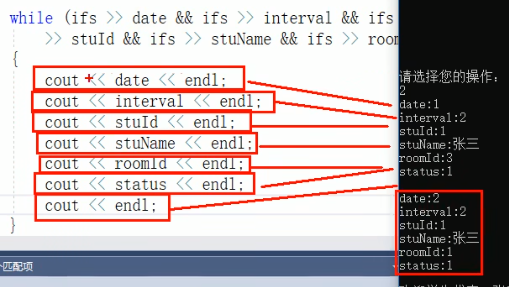
更新预约记录的成员函数updateOrder代码如下：
1 2 3 4 5 6 7 8 9 10 11 12 13 14 15 16 17 18 19 void OrderFile::updateOrder () if (this ->m_Size == 0 ) { return ; } ofstream ofs (ORDER_FILE, ios::out | ios::trunc) ; for (int i = 0 ; i < m_Size;i++) { ofs << "date:" << this ->m_orderData[i]["date" ] << " " ; ofs << "interval:" << this ->m_orderData[i]["interval" ] << " " ; ofs << "stuId:" << this ->m_orderData[i]["stuId" ] << " " ; ofs << "stuName:" << this ->m_orderData[i]["stuName" ] << " " ; ofs << "roomId:" << this ->m_orderData[i]["roomId" ] << " " ; ofs << "status:" << this ->m_orderData[i]["status" ] << endl ; } ofs.close (); }
8.3.2 显示自身预约 首先我们先添加几条预约记录，可以用程序添加或者直接修改order.txt文件
order.txt文件内容如下： 比如我们有三名同学分别产生了3条预约记录
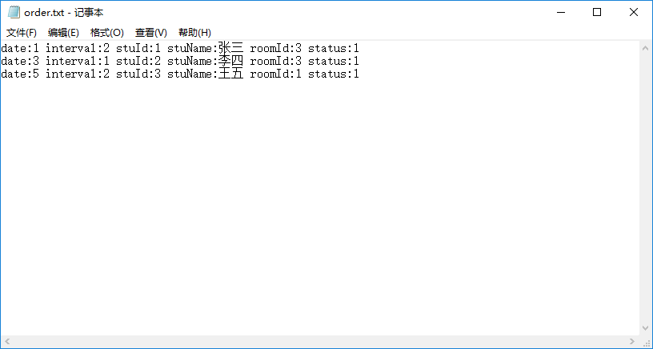
在Student类的void Student::showMyOrder()成员函数中，添加如下代码
1 2 3 4 5 6 7 8 9 10 11 12 13 14 15 16 17 18 19 20 21 22 23 24 25 26 27 28 29 30 31 32 33 34 35 36 37 38 39 40 41 42 43 void Student::showMyOrder () OrderFile of; if (of.m_Size == 0 ) { cout << "无预约记录" << endl ; system("pause" ); system("cls" ); return ; } for (int i = 0 ; i < of.m_Size; i++) { if (atoi(of.m_orderData[i]["stuId" ].c_str()) == this ->m_Id) { cout << "预约日期： 周" << of.m_orderData[i]["date" ]; cout << " 时段：" << (of.m_orderData[i]["interval" ] == "1" ? "上午" : "下午" ); cout << " 机房：" << of.m_orderData[i]["roomId" ]; string status = " 状态： " ; if (of.m_orderData[i]["status" ] == "1" ) { status += "审核中" ; } else if (of.m_orderData[i]["status" ] == "2" ) { status += "预约成功" ; } else if (of.m_orderData[i]["status" ] == "-1" ) { status += "审核未通过，预约失败" ; } else { status += "预约已取消" ; } cout << status << endl ; } } system("pause" ); system("cls" ); }
“stirng”.c_str()：string -> char*
atoi() ：char* -> int
8.3.3 显示所有预约 在Student类的void Student::showAllOrder()成员函数中，添加如下代码
1 2 3 4 5 6 7 8 9 10 11 12 13 14 15 16 17 18 19 20 21 22 23 24 25 26 27 28 29 30 31 32 33 34 35 36 37 38 39 40 41 42 43 44 void Student::showAllOrder () OrderFile of; if (of.m_Size == 0 ) { cout << "无预约记录" << endl ; system("pause" ); system("cls" ); return ; } for (int i = 0 ; i < of.m_Size; i++) { cout << i + 1 << "、 " ; cout << "预约日期： 周" << of.m_orderData[i]["date" ]; cout << " 时段：" << (of.m_orderData[i]["interval" ] == "1" ? "上午" : "下午" ); cout << " 学号：" << of.m_orderData[i]["stuId" ]; cout << " 姓名：" << of.m_orderData[i]["stuName" ]; cout << " 机房：" << of.m_orderData[i]["roomId" ]; string status = " 状态： " ; if (of.m_orderData[i]["status" ] == "1" ) { status += "审核中" ; } else if (of.m_orderData[i]["status" ] == "2" ) { status += "预约成功" ; } else if (of.m_orderData[i]["status" ] == "-1" ) { status += "审核未通过，预约失败" ; } else { status += "预约已取消" ; } cout << status << endl ; } system("pause" ); system("cls" ); }
8.4 取消预约 在Student类的void Student::cancelOrder()成员函数中，添加如下代码
1 2 3 4 5 6 7 8 9 10 11 12 13 14 15 16 17 18 19 20 21 22 23 24 25 26 27 28 29 30 31 32 33 34 35 36 37 38 39 40 41 42 43 44 45 46 47 48 49 50 51 52 53 54 55 56 57 58 59 60 61 62 63 64 65 66 67 68 69 void Student::cancelOrder () OrderFile of; if (of.m_Size == 0 ) { cout << "无预约记录" << endl ; system("pause" ); system("cls" ); return ; } cout << "审核中或预约成功的记录可以取消，请输入取消的记录" << endl ; vector <int >v; int index = 1 ; for (int i = 0 ; i < of.m_Size; i++) { if (atoi(of.m_orderData[i]["stuId" ].c_str()) == this ->m_Id) { if (of.m_orderData[i]["status" ] == "1" || of.m_orderData[i]["status" ] == "2" ) { v.push_back(i); cout << index ++ << "、 " ; cout << "预约日期： 周" << of.m_orderData[i]["date" ]; cout << " 时段：" << (of.m_orderData[i]["interval" ] == "1" ? "上午" : "下午" ); cout << " 机房：" << of.m_orderData[i]["roomId" ]; string status = " 状态： " ; if (of.m_orderData[i]["status" ] == "1" ) { status += "审核中" ; } else if (of.m_orderData[i]["status" ] == "2" ) { status += "预约成功" ; } cout << status << endl ; } } } cout << "请输入取消的记录,0代表返回" << endl ; int select = 0 ; while (true ) { cin >> select; if (select >= 0 && select <= v.size ()) { if (select == 0 ) { break ; } else { of.m_orderData[v[select - 1 ]]["status" ] = "0" ; of.updateOrder(); cout << "已取消预约" << endl ; break ; } } cout << "输入有误，请重新输入" << endl ; } system("pause" ); system("cls" ); }
至此，学生模块功能全部实现
9、 教师模块 9.1 教师登录和注销 9.1.1 构造函数 在Teacher类的构造函数中，初始化教师信息，代码如下： 1 2 3 4 5 6 7 8 Teacher::Teacher(int empId, string name, string pwd) { this ->m_EmpId = empId; this ->m_Name = name; this ->m_Pwd = pwd; }
9.1.2 教师子菜单 在机房预约系统.cpp中，当用户登录的是教师，添加教师菜单接口 将不同的分支提供出来 实现注销功能 添加全局函数 void TeacherMenu(Person * &manager) 代码如下：
1 2 3 4 5 6 7 8 9 10 11 12 13 14 15 16 17 18 19 20 21 22 23 24 25 26 27 28 29 30 31 32 33 34 void TeacherMenu (Identity * &teacher) while (true ) { teacher->operMenu(); Teacher* tea = (Teacher*)teacher; int select = 0 ; cin >> select; if (select == 1 ) { tea->showAllOrder(); } else if (select == 2 ) { tea->validOrder(); } else { delete teacher; cout << "注销成功" << endl ; system("pause" ); system("cls" ); return ; } } }
9.1.3 菜单功能实现 在实现成员函数void Teacher::operMenu() 代码如下： 1 2 3 4 5 6 7 8 9 10 11 12 13 14 15 void Teacher::operMenu () cout << "欢迎教师：" << this ->m_Name << "登录！" << endl ; cout << "\t\t ----------------------------------\n" ; cout << "\t\t| |\n" ; cout << "\t\t| 1.查看所有预约 |\n" ; cout << "\t\t| |\n" ; cout << "\t\t| 2.审核预约 |\n" ; cout << "\t\t| |\n" ; cout << "\t\t| 0.注销登录 |\n" ; cout << "\t\t| |\n" ; cout << "\t\t ----------------------------------\n" ; cout << "请选择您的操作： " << endl ; }
9.1.4 接口对接 教师成功登录后，调用教师的子菜单界面 在教师登录分支中，添加代码： 9.2 查看所有预约 9.2.1 所有预约功能实现 该功能与学生身份的查看所有预约功能相似，用于显示所有预约记录
在Teacher.cpp中实现成员函数 void Teacher::showAllOrder()
1 2 3 4 5 6 7 8 9 10 11 12 13 14 15 16 17 18 19 20 21 22 23 24 25 26 27 28 29 30 31 32 33 34 35 36 37 38 39 40 41 42 void Teacher::showAllOrder () OrderFile of; if (of.m_Size == 0 ) { cout << "无预约记录" << endl ; system("pause" ); system("cls" ); return ; } for (int i = 0 ; i < of.m_Size; i++) { cout << i + 1 << "、 " ; cout << "预约日期： 周" << of.m_orderData[i]["date" ]; cout << " 时段：" << (of.m_orderData[i]["interval" ] == "1" ? "上午" : "下午" ); cout << " 学号：" << of.m_orderData[i]["stuId" ]; cout << " 姓名：" << of.m_orderData[i]["stuName" ]; cout << " 机房：" << of.m_orderData[i]["roomId" ]; string status = " 状态： " ; if (of.m_orderData[i]["status" ] == "1" ) { status += "审核中" ; } else if (of.m_orderData[i]["status" ] == "2" ) { status += "预约成功" ; } else if (of.m_orderData[i]["status" ] == "-1" ) { status += "审核未通过，预约失败" ; } else { status += "预约已取消" ; } cout << status << endl ; } system("pause" ); system("cls" ); }
9.2.2 测试功能 运行测试教师身份的查看所有预约功能
9.3 审核预约 9.3.1 审核功能实现 功能描述：教师审核学生的预约，依据实际情况审核预约
在Teacher.cpp中实现成员函数 void Teacher::validOrder()
代码如下：
1 2 3 4 5 6 7 8 9 10 11 12 13 14 15 16 17 18 19 20 21 22 23 24 25 26 27 28 29 30 31 32 33 34 35 36 37 38 39 40 41 42 43 44 45 46 47 48 49 50 51 52 53 54 55 56 57 58 59 60 61 62 63 64 65 66 67 68 69 70 void Teacher::validOrder () OrderFile of; if (of.m_Size == 0 ) { cout << "无预约记录" << endl ; system("pause" ); system("cls" ); return ; } cout << "待审核的预约记录如下：" << endl ; vector <int >v; int index = 0 ; for (int i = 0 ; i < of.m_Size; i++) { if (of.m_orderData[i]["status" ] == "1" ) { v.push_back(i); cout << ++index << "、 " ; cout << "预约日期： 周" << of.m_orderData[i]["date" ]; cout << " 时段：" << (of.m_orderData[i]["interval" ] == "1" ? "上午" : "下午" ); cout << " 机房：" << of.m_orderData[i]["roomId" ]; string status = " 状态： " ; if (of.m_orderData[i]["status" ] == "1" ) { status += "审核中" ; } cout << status << endl ; } } cout << "请输入审核的预约记录,0代表返回" << endl ; int select = 0 ; int ret = 0 ; while (true ) { cin >> select; if (select >= 0 && select <= v.size ()) { if (select == 0 ) { break ; } else { cout << "请输入审核结果" << endl ; cout << "1、通过" << endl ; cout << "2、不通过" << endl ; cin >> ret; if (ret == 1 ) { of.m_orderData[v[select - 1 ]]["status" ] = "2" ; } else { of.m_orderData[v[select - 1 ]]["status" ] = "-1" ; } of.updateOrder(); cout << "审核完毕！" << endl ; break ; } } cout << "输入有误，请重新输入" << endl ; } system("pause" ); system("cls" ); }
9.3.2 测试审核预约 测试 - 审核通过